Interleave-VLA: Enhancing Robot Manipulation with Interleaved Image-Text Instructions
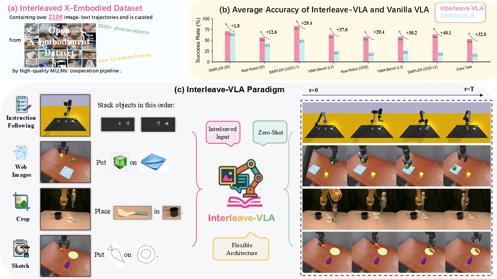
We introduce Interleave-VLA, the first vision-language-action (VLA) framework capable of understanding interleaved image-text instructions and directly generating continuous action sequences in the physical world. It offers a flexible, model-agnostic paradigm that extends state-of-the-art VLA models with minimal modifications and strong zero-shot generalization, achieving 2-3× better out-of-domain generalization to unseen objects compared to the base VLA model from which it is adapted. Moreover, it supports flexible task interfaces and robustly handles diverse user-provided image instructions—including hand-drawn sketches—right out of the box. Through comprehensive evaluations on both simulated and real-robot platforms, we demonstrate Interleave-VLA's strong generalization and scalability, underscoring its promise for advancing multimodal robot learning.
Interleave-VLA and Interleaved X-Embodiment Dataset
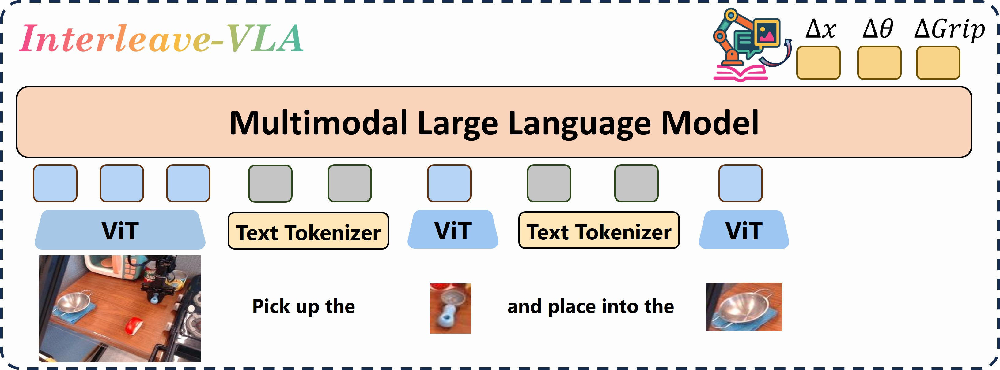
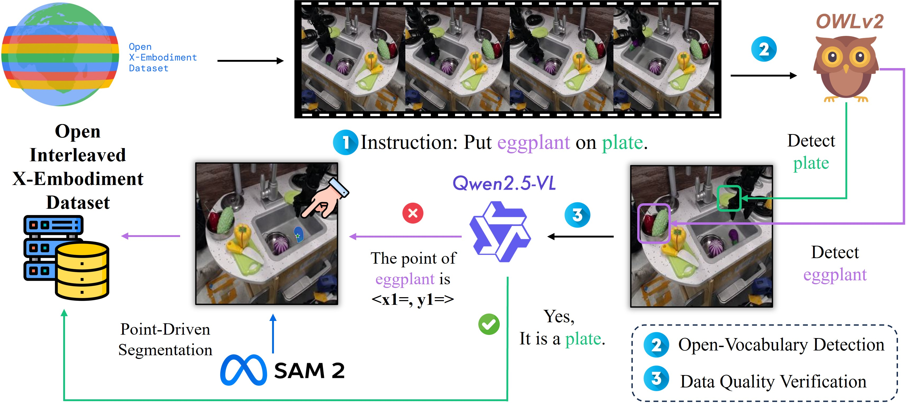
Left: Interleave-VLA is a straightforward yet effective adaptation of existing VLA models. It modifies the input format to accept interleaved image and text tokens, without changing the core model architecture. We demonstrate this approach by adapting two state-of-the-art VLA models. For π0, we retain the original architecture and only adjust the input pipeline to handle interleaved tokens. Notably, even though VLM backbone Paligemma is not trained on interleaved data, Interleave-π0 can still effectively process interleaved instructions. For OpenVLA, we replace the original Prismatic backbone with InternVL2.5, which natively supports image-text interleaved inputs. Experiments show that this model-agnostic adaptation requires minimal changes in architecture and significantly enhances the zero-shot generalization capabilities of base VLAs.
Right: To train Interleave-VLA, we curate Interleaved X-Embodiment dataset of 210k robot manipulation trajectories from the Open X-Embodiment dataset using a streamlined three-step process: (1) Use LLMs to extract key objects from instructions; (2) Apply OWLv2 for open-vocabulary object detection and cropping; (3) Use QwenVL to verify results and, if needed, refine segmentation with Segment Anything. The dataset covers diverse objects, tasks, and robot embodiments.
Experiments
In-Domain and Out-of-Domain Evaluations on Multiple Robot Platforms
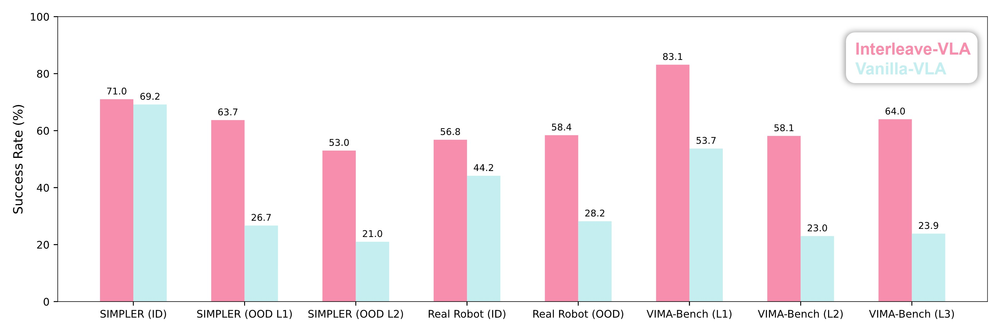
We comprehensively evaluate Interleave-VLA's generalization capabilities in both in-domain and out-of-domain scenarios, spanning simulated and real-world robot platforms. Our experiments cover three distinct setups: the SIMPLER WidowX, VIMA-Bench UR5, and real-world FANUC robots. For each setting, we design a range of out-of-domain challenges with varying difficulty levels. Across all benchmarks, Interleave-VLA consistently generalizes better than base VLAs that rely solely on textual instructions, achieving 2-3x higher performance. These results highlight the effectiveness of interleaved image-text adaptation as a promising strategy for enhancing the generalizability of robot manipulation through multimodal learning. For more detailed qualitative insights, please refer to the following sections: Sample Interleave-VLA Rollout Videos and Comparisons with State-of-the-Art Models.
Task Flexibility and Emergent Generalization
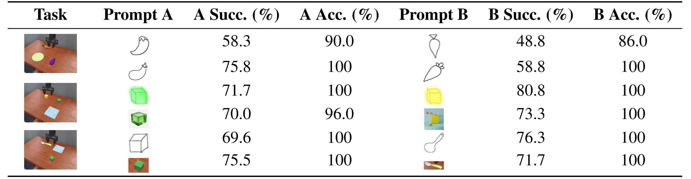
In addition to the out-of-domain generalization setting commonly used to evaluate current VLAs, Interleave-VLA demonstrates an impressive emergent capability: it enables users to flexibly specify instructions in a completely zero-shot manner, without requiring any additional finetuning on unseen input modalities. Instructions can be in diverse formats, including: (1) Cropped Image Instructions: Users can directly crop a region from the screen to indicate the target object. (2) Internet Image Instructions: Users may supply any image—such as a photo retrieved from the Internet—to represent the desired object. (3) Hand-Drawn Sketch Instructions: Users can draw sketches or cartoons about the objects. The consistently high accuracy demonstrates that Interleave-VLA can
robustly interpret and execute visually grounded instructions, showing strong potential for flexible
and practical human-robot interaction. Qualitative demonstrations can be found in the following section: Sample Interleave-VLA Rollout Videos > Task Flexibility and Emergent Generalization Rollouts.
Sample Interleave-VLA Rollout Videos
The following videos showcase Interleave-VLA's zero-shot generalization capabilities in handling unseen objects and environments. They also highlight the model's versatility across a broad spectrum of manipulation tasks.
SIMPLER WidowX Rollouts
In SIMPLER WidowX, Interleave-VLA maintains strong performance in unseen environments.
Put Spoon on Towel, Dynamic Lighting
Put Spoon on Towel, Unseen Tablecloth
Put Spoon on Towel, Unseen Env
Interleave-VLA robustly generalizes to unseen objects from seen categories.
Put Redbull on Plate
Put Tennis Ball in Basket
Put Zucchini on Plate
Interleave-VLA effectively adapts to entirely novel object categories.
Put Tape Measure in Basket
Put Toy Dinosaur on Towel
Put Stapler on Paper Pile
VIMA-Bench UR5 Rollouts
In VIMA-Bench, Interleave-VLA demonstrates strong versatility across a wide range of tasks, and robustly generalizes to novel object positions, textures, and shapes.
Put into
Put the red swirl object in into the purple object
Rotate 120 degrees
Rearrange to this
This is a dax 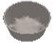. This is a blicket . Put a blicket into a dax
Stack objects in this order
Real-World FANUC Rollouts
On the real-world FANUC robotic arm, Interleave-VLA demonstrates robust performance in both lifting and pick-and-place tasks, and reliably generalizes to previously unseen kitchen tools and food items.
Move Pasta Server into Pot
Move Black Spatula into Pot
Move White and Blue Spatula into Pot
Pick up Bean
Pick up Lemon
Pick up Cup
Task Flexibility and Emergent Generalization Rollouts
Interleave-VLA shows emergent generalization to flexible instructions completely unseen during training: Internet images, cropped images, and hand-drawn sketches. Notably, no sketches are seen during training.
Put on Towel
Put 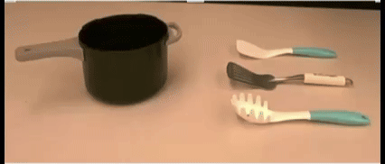 into Pot
Put 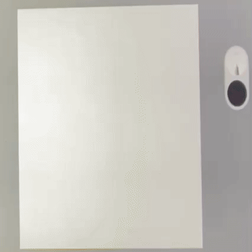 on Plate
Comparisons with State-of-the-Art Models
To highlight the significant generalization improvements, we present a qualitative comparison between Interleave-VLA and its base VLA relying solely on textual instructions across a range of evaluation tasks.
π0: Put Zucchini on Plate (OOD: unseen target object from seen category)
❌
Interleave-VLA: Put on Plate (OOD: unseen target object from seen category)
✅
π0: Put the Toy Dinosaur on Towel (OOD: unseen target category)
❌
Interleave-VLA: Put 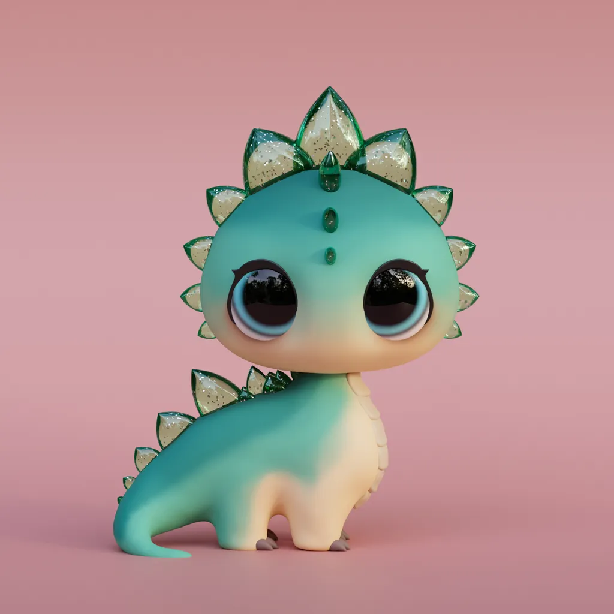 on Towel (OOD: unseen target category)
✅
OpenVLA: Put all objects with the same profile as Blue and Purple Stripe Bowl into it
❌
Interleave-VLA: Put all objects with the same profile as 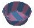 into it
✅
OpenVLA: Put the Rainbow Triangle into the Blue Square
❌
Interleave-VLA: Put into
✅
π0: Move Black Spatula into Pot (OOD: unseen target object from seen category)
❌
Interleave-VLA: Move 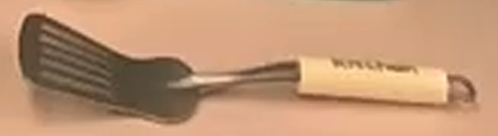 into Pot (OOD: unseen target object from seen category)
✅
π0: Pick up Bean (OOD: unseen target category)
❌
Interleave-VLA: Pick up 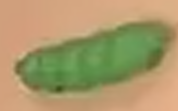 (OOD: unseen target category)